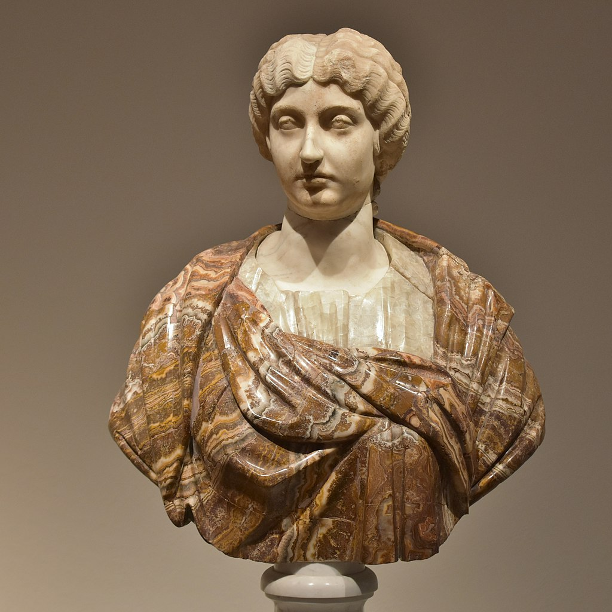
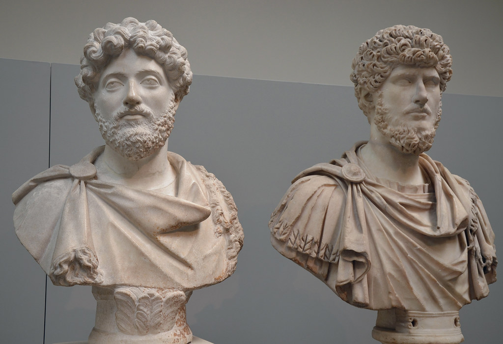
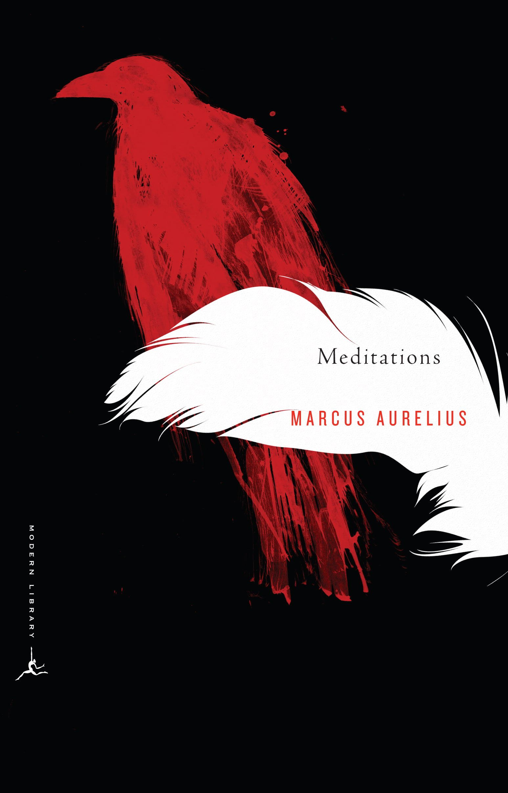

The Stoic Emperor
He was also the author of Meditations, his personal writings that gave way to Stoicism, a philosophy that is still important today, more than 2,000 years later.
The 4 Cardinal Virtues of Stoicism
Wisdom
Wisdom is the ability to define what is good, what is bad, and what is indifferent. Wisdom can be gathered through learning, discussion, or trial and error. It's also the ability to change and grow. when we are presented with the fact that we are wrong, to become a better person.
Courage
Courage is the act of facing and acting in the right way despite our own fear, desire, beliefs and anxieties. To overcome those feelings that will lead to cowardness, all the while being a good person. Courage is the ability to remain strong of our identity and morals in the face of fear and desire not to do so.
Temperance
Temperance is moderation, balance or self-discipline. The ability to choose long term well-being over instant gratification. If someone is provoking you to fall into addictive behaviours, one is to respond thoughtfully and calculatedly. It doesn't mean you have to ditch all entertainments, it simply means that comfort under the right balance is a good thing.
Justice
Justice in Stoicism is different to our modern perspective of Justice in the legal sense. the Stoics view Justice as the act of moral sense. It's the morality behind how we treat others fairly and doing the right thing. Give back to your community aside from just take it, for example. Justice guides all other virtues because it is your moral compass.
Timeline
-
121
Marcus Aurelius was born.
His name at birth was supposedly Marcus Annius Verus.
-
127
Marcus Aurelius enrolled in the equestrian order by nomination of Emperor Hadrian.
He would be tutored later by Apollonius of Chalcedon, who introduced him to Stoicism.
-
136
Marcus Aurelius adopted by Antoninus Pius as successor.
Antoninus Pius was also adopted by Emperor Hadrian before he died.
-
145
Marcus Aurelius marries Faustina, daughter of Antoninus Pius.
They had 13 children together. 5 sons and 3 daughters later died before him as time goes on.
Faustina the Younger -
8 Mar 161 - Mar 169
Marcus Aurelius rules with Lucius Verus.
Before that, he refused to take the Emperor title unless Lucius Verus was made co-emperor alongside him. It was odd, but the Senate accepted.
Marcus Aurelius (left) and Lucius Verus (right) as co-emperors of Rome. -
161 - 166
Parthian Wars with Rome; Lucius Verus commands Rome's forces in the field.
-
169
Lucius Verus dies.
-
Mar 169 - 177
Marcus Aurelius rules alone.
-
170 - 180
Marcus Aurelius leads campaigns against the Germanic tribes; writes his famous Meditations.
Meditations: A New Translation by Gregory Hays, considered one of the best translations of the book. -
175
Marcus Aurelius tours eastern provinces of empire; his wife Faustina dies.
-
176
A huge bronze statue of Marcus Aurelius on horseback is erected in Rome.

A statue of Marcus Aurelius on horseback. -
177 - 17 Mar 180
Marcus Aurelius rules with Commodus.
-
17 Mar 180
Marcus Aurelius died at the age of 58.
Words to live by
The best revenge is not to be like your enemy.
You have power over your mind - not outside events.
Realize this, and you will find strength.
When you wake up in the morning, tell yourself: the people I deal with today will be meddling, ungrateful, arrogant, dishonest, jealous and surly. They are like this because they can't tell good from evil.
At dawn, when you have trouble getting out of bed, tell yourself: “I have to go to work — as a human being. What do I have to complain of, if I’m going to do what I was born for — the things I was brought into the world to do? Or is this what I was created for? To huddle under the blankets and stay warm?”
So you were born to feel “nice”? Instead of doing things and experiencing them? Don’t you see the plants, the birds, the ants and spiders and bees going about their individual tasks, putting the world in order, as best they can? And you’re not willing to do your job as a human being? Why aren’t you running to do what your nature demands?